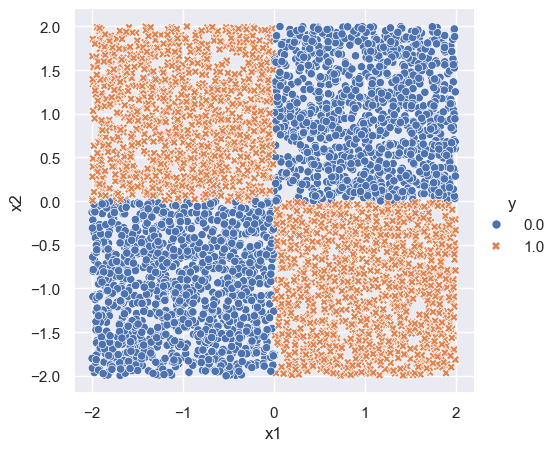
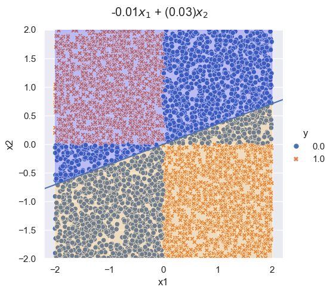
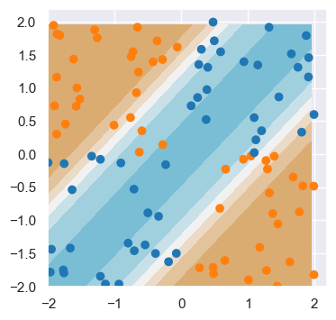
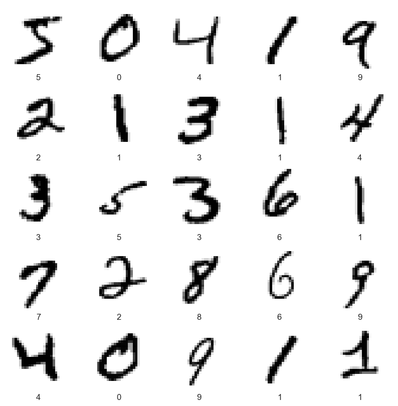
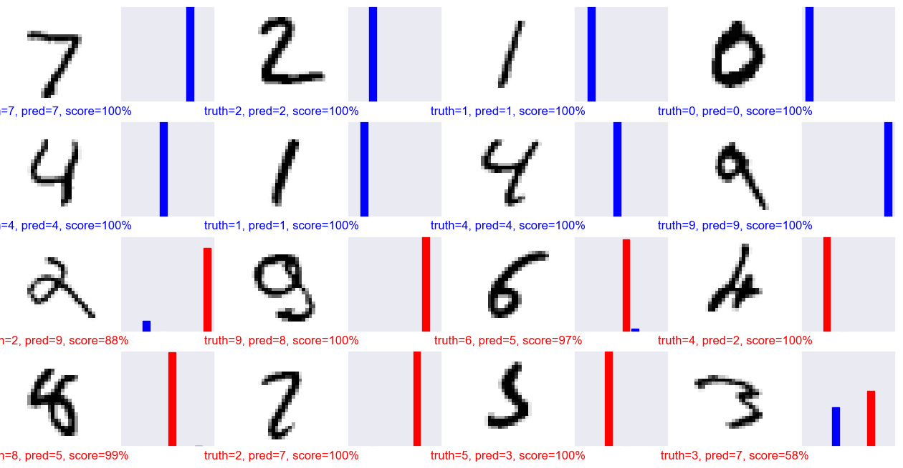
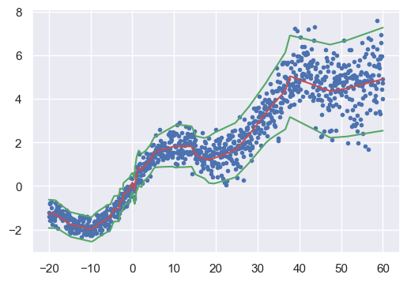

import numpy as np
import pandas as pd
import seaborn as sns
import matplotlib.pyplot as plt
from sklearn.linear_model import LogisticRegression
import torch
import torch.nn as nn
import torch.nn.functional as F
from torch import optim
from torch.utils.data import TensorDataset, DataLoader
import torchvision
import warnings
warnings.filterwarnings('ignore')Lecture 2
Import packages
The “XOR” (or “exclusive OR”) problem is often used to illustrate the ability of neural networks to fit complicated functions. The XOR problem has a checkerboard structure:
# xor ------------------------------------
n = 5000
p = 2
x = np.random.uniform(-2, 2, size=(n, p))
#x[,1] <- first column (R)
#x[:, 0] <- first column (Python)
y = ((x[:,0] < 0) & (x[:, 1] > 0)).astype(x.dtype) + ((x[:,0] > 0) & (x[:, 1] < 0)).astype(x.dtype)
df = np.hstack([y.reshape((n, 1)), x])
df = pd.DataFrame(df, columns = ['y', 'x1', 'x2'])
sns.set_theme()
xor_plot = sns.relplot(df, x='x1', y='x2', hue='y', style='y')
xor_plot.figure.subplots_adjust(top=.9)
Logistic regression can only fit linear decision boundaries, and so fails the XOR problem.
## logitstic regression doesn't work
log_fit = LogisticRegression()
log_fit.fit(x, y)
coeffs = log_fit.coef_[0]
coeff = -coeffs[0]/coeffs[1]
## plot
logit_plot = sns.relplot(df, x='x1', y='x2', hue='y', style='y')
plt.axline([0,0], slope=coeff)
## title
logit_plot.figure.subplots_adjust(top=.9)
logit_plot.figure.suptitle(str(round(coeffs[0], 2)) + r'$x_1$ + ' + str(round(-coeffs[1], 2)) + r'$x_2$')
## fill in area
x_fill = np.linspace(-2, 2, num=200)
y_line = coeff * x_fill
logit_plot.ax.fill_between(x_fill, y_line, 2, color='blue', alpha=0.2)
logit_plot.ax.fill_between(x_fill, -2, y_line, color='orange', alpha=0.2)
logit_plot.ax.set_ylim(-2,2)
Neural networks
Let’s set up a 1-layer neural network to solve the XOR problem.
For deep learning, we use the torch package, available here.
Neural network classes in PyTorch
torch provides a base class called nn.Module.
When we set up a neural network, we sub-class nn.Module.
Here is an example of a neural network in torch named XORNet.
class XORNet(nn.Module):
def __init__(self, input_dim, hidden_dim):
super().__init__()
self.sequential = nn.Sequential(
nn.Linear(input_dim, hidden_dim),
nn.Sigmoid(),
nn.Linear(hidden_dim, 1),
nn.Sigmoid())
def forward(self, x):
y = self.sequential(x)
y = torch.flatten(y)
return y
def loss_fn(self, y, y_pred):
loss = y * torch.log(y_pred + 1e-8) + (1-y) * torch.log(1-y_pred + 1e-8)
output = -loss.sum()
return outputThe class statement identifies the code chunk as a declaration for a class XORNet that inherits from the base class nn.Module. This base class is ubiquitous in torch and represents the mappings in the neural networks.
Indented beneath the class statement are the methods of this class: in this case __init__, forward and loss_fn. The __init__ method is called when an instance of the class is created. In the methods, self always refers to an instance of the class. In the __init__ method, we have attached an object to self as an attribute: sequential, that defines the neural network architecture.
There is one additional line in the __init__ method, which is a call to super(). This function allows subclasses (i.e. XORNet) to access methods of the class they inherit from. For example, the class nn.Module has its own __init__ method, which is different from the XORNet.__init__() method we’ve written above. Using super() allows us to call the method of the base class. For torch models, we will always be making this super() call as it is necessary for the model to be properly interpreted by torch.
The function forward is called when the neural network is run on input data.
(Above explanation adapted from ISLP labs)
hidden_dim=2
model = XORNet(input_dim=p, hidden_dim=hidden_dim)modelXORNet(
(sequential): Sequential(
(0): Linear(in_features=2, out_features=2, bias=True)
(1): Sigmoid()
(2): Linear(in_features=2, out_features=1, bias=True)
(3): Sigmoid()
)
)Data
For torch to read the data, it needs to be a torch.tensor type:
x_train = torch.tensor(x, dtype=torch.float)
y_train = torch.tensor(y, dtype=torch.float)We combine x_train and y_train into a TensorDataset, a dataset recognizable by torch. TensorDataset stores the samples and their labels. It is a subclass of the more general torch.utils.data.Dataset, which you can customize for non-standard data.
train_data = TensorDataset(x_train, y_train)TensorDataset is helpful as it can be passed to DataLoader(). DataLoader wraps an iterable around the Dataset class to enable easy access to the samples. This is very helpful for implementing stochastic gradient descent, where we iterate over subsets (batches) of the data.
train_loader = DataLoader(dataset=train_data, batch_size=10, shuffle=True)Training
We now set up the optimizer for training. We use Adam, and a base learning rate of lr=0.01. We set the number of epochs to 100. (Rule of thumb: pick largest lr that still results in convergence)
lr = 0.01
epochs = 100
optimizer = optim.Adam(model.parameters(), lr=lr)
# set model to training mode
model.train()XORNet(
(sequential): Sequential(
(0): Linear(in_features=2, out_features=2, bias=True)
(1): Sigmoid()
(2): Linear(in_features=2, out_features=1, bias=True)
(3): Sigmoid()
)
)Now we train the model:
for epoch in range(epochs):
# in each epoch, iterate over all batches of data (easily accessed through train_loader)
l = 0
for x_batch, y_batch in train_loader:
pred = model(x_batch) # this is the output from the forward function
loss = model.loss_fn(y_batch, pred) # calculate loss function
loss.backward() # computes gradients wrt loss function
optimizer.step() # updates parameters
optimizer.zero_grad() # set the gradients back to zero (otherwise grads are accumulated)
l += loss.item()
if epoch % 10 == 0:
print('epoch: ', epoch, 'loss:', f"{l:.3}")epoch: 0 loss: 3.43e+03
epoch: 10 loss: 1.92e+03
epoch: 20 loss: 1.9e+03
epoch: 30 loss: 1.89e+03
epoch: 40 loss: 1.89e+03
epoch: 50 loss: 1.88e+03
epoch: 60 loss: 1.88e+03
epoch: 70 loss: 1.88e+03
epoch: 80 loss: 1.88e+03
epoch: 90 loss: 1.88e+03To visualize the end result, we plot the predicted values over the whole space (the decision surface).
x1 = np.arange(-2, 2, 0.05)
x2 = np.arange(-2, 2, 0.05)
x_test_np = np.array([(i, j) for i in x1 for j in x2])
y_test_np = ((x_test_np[:,0] < 0) & (x_test_np[:, 1] > 0)).astype(x_test_np.dtype) + ((x_test_np[:,0] > 0) & (x_test_np[:, 1] < 0)).astype(x_test_np.dtype)
x_test = torch.tensor(x_test_np, dtype=torch.float)
y_test = torch.tensor(y_test_np)
model.eval()
y_pred = model(x_test)
y_pred_np = y_pred.detach().numpy()
y_pred_np = y_pred_np.reshape(x1.shape[0], x2.shape[0])
seaborn_cols = sns.color_palette("tab10")
cols = [seaborn_cols[int(i)] for i in y]
custom_cmap = sns.diverging_palette(220, 50, s=70, l=70, as_cmap=True)
fig, ax = plt.subplots(1, 1)
fig.set_size_inches(4, 4)
ax.contourf(x1, x2, y_pred_np, cmap=custom_cmap)
ax.scatter(x[0:100,0], x[0:100,1], c=cols[0:100])
model.sequential[0].weightParameter containing:
tensor([[ 1.9588, -2.0800],
[ 1.8403, -1.9693]], requires_grad=True)model.sequential[0].biasParameter containing:
tensor([ 3.2469, -3.4566], requires_grad=True)model.sequential[2].weightParameter containing:
tensor([[-7.8841, 10.4450]], requires_grad=True)Play around with different sizes of hidden_dim and see the difference!
model.sequential[2].biasParameter containing:
tensor([5.2895], requires_grad=True)MNIST example
We use torchvision.datasets to download the MNIST data.
(mnist_train,
mnist_test) = [torchvision.datasets.MNIST(root='data',
train=train,
download=True,
transform=torchvision.transforms.ToTensor())
for train in [True, False]]
plt.figure(figsize=(10, 10))
for i in range(25):
plt.subplot(5, 5, i + 1)
plt.xticks([])
plt.yticks([])
plt.grid(False)
train_image, label = mnist_train[i]
plt.imshow(train_image[0], cmap=plt.cm.binary)
plt.xlabel(label)
plt.show()
Set up our dataloaders.
train_loader = DataLoader(dataset=mnist_train, batch_size=64, shuffle=True)
test_loader = DataLoader(dataset=mnist_test, batch_size=10000, shuffle=False)Let’s define our neural network for the MNIST classification problem.
class MNISTNet(nn.Module):
def __init__(self):
super(MNISTNet, self).__init__()
self.layers = nn.Sequential(
nn.Linear(28*28, 256),
nn.ReLU(),
nn.Linear(256, 128),
nn.ReLU(),
nn.Linear(128, 10),
nn.Softmax()
)
def forward(self, x):
prob = self.layers(x)
return prob
def loss_fn(self, y, y_pred):
log_pred = torch.log(y_pred + 1e-8)
loss = -(log_pred * y).sum(1).mean()
return lossInstantiate our model:
model = MNISTNet()Train our model:
lr = 0.001
epochs = 50
optimizer = optim.Adam(model.parameters(), lr=lr)
# set model to training mode
model.train()
for epoch in range(epochs):
l = 0
for x_batch, y_batch in train_loader:
x_batch = x_batch.reshape(x_batch.shape[0], 28*28)
y_batch = F.one_hot(y_batch, num_classes=10)
y_pred = model(x_batch)
loss = model.loss_fn(y_batch, y_pred)
loss.backward()
optimizer.step()
optimizer.zero_grad()
l += loss.item()
if epoch % 10 == 0:
print('epoch: ', epoch, 'loss:', f"{l:.3}")epoch: 0 loss: 2.63e+02
epoch: 10 loss: 12.6
epoch: 20 loss: 5.3
epoch: 30 loss: 6.31
epoch: 40 loss: 4.5Calculate our accuracy:
model.eval()
x_batch, y_batch = next(iter(test_loader))
x_batch = x_batch.reshape(x_batch.shape[0], 28 * 28)
y_pred_array = model(x_batch)
y_pred = torch.argmax(y_pred_array, axis=1)
acc = (y_pred == y_batch).sum()
acc = acc / len(y_pred)Let’s look at some interesting results (code adapted from here)
# find interesting test images
errors = torch.where(y_pred != y_batch)[0]
inds1 = range(8)
inds2 = errors[:8]
inds = np.concatenate((inds1, inds2))
pred_array = y_pred_array.detach().numpy()
num_rows = 4
num_cols = 4
num_images = num_rows * num_cols
plt.figure(figsize=(2 * 2 * num_cols, 2 * num_rows))
for i in range(num_images):
n = inds[i]
plt.subplot(num_rows, 2 * num_cols, 2 * i + 1)
plt.xticks([])
plt.yticks([])
plt.grid(False)
image, label = mnist_test[n]
plt.imshow(image[0], cmap=plt.cm.binary)
plt.xlabel(label)
predicted_label = y_pred[n]
if predicted_label == label:
color = 'blue'
else:
color = 'red'
plt.xlabel("truth={}, pred={}, score={:2.0f}%".format(
label,
predicted_label,
100 * np.max(pred_array[n])),
color=color)
plt.subplot(num_rows, 2*num_cols, 2*i+2)
plt.grid(False)
plt.xticks([])
plt.yticks([])
thisplot = plt.bar(range(10), pred_array[n], color="#777777")
plt.ylim([0, 1])
predicted_label = np.argmax(pred_array[n])
thisplot[predicted_label].set_color('red')
thisplot[label].set_color('blue')
Heteroskedastic regression
This code is adapted from here.
# Make data
x_range = [-20, 60] # test
x_ranges = [[-20, 60]]
ns = [1000]
def load_dataset():
def s(x): # std of noise
g = (x - x_range[0]) / (x_range[1] - x_range[0])
return 0.25 + g**2.0
x = []
y = []
for i in range(len(ns)):
n = ns[i]
xr = x_ranges[i]
x1 = np.linspace(xr[0], xr[1], n)
eps = np.random.randn(n) * s(x1)
y1 = (1 * np.sin(0.2 * x1) + 0.1 * x1) + eps
x = np.concatenate((x, x1))
y = np.concatenate((y, y1))
# print(x.shape)
x = x[..., np.newaxis]
n_test = 150
x_test = np.linspace(*x_range, num=n_test).astype(np.float32)
x_test = x_test[..., np.newaxis]
return y, x, x_test
y, x, x_test = load_dataset()Define neural network
class HetNet(nn.Module):
def __init__(self, input_dim, output_dim, hidden_dims, mean_dims, var_dims):
super(HetNet, self).__init__()
self.input_dim = input_dim
self.output_dim = output_dim
self.hidden_dim = hidden_dims
self.mean_dims = mean_dims
self.var_dims = var_dims
# create backbone
current_dim = input_dim
self.layers = nn.ModuleList()
for i in range(len(hidden_dims)):
hdim = hidden_dims[i]
self.layers.append(nn.Linear(current_dim, hdim))
current_dim = hdim
# create heads
core_dim = hidden_dims[-1]
current_dim = core_dim
self.mean_layers = nn.ModuleList()
for i in range(len(mean_dims)):
hdim = mean_dims[i]
self.mean_layers.append(nn.Linear(current_dim, hdim))
current_dim = hdim
self.mean_layers.append(nn.Linear(current_dim, output_dim))
current_dim = core_dim
self.var_layers = nn.ModuleList()
for i in range(len(var_dims)):
hdim = var_dims[i]
self.var_layers.append(nn.Linear(current_dim, hdim))
current_dim = hdim
self.var_layers.append(nn.Linear(current_dim, output_dim))
def core_net(self, x):
for layer in self.layers:
x = F.relu(layer(x))
return x
def mean_net(self, x):
for layer in self.mean_layers[:-1]:
x = F.relu(layer(x))
x = self.mean_layers[-1](x)
return x
def var_net(self, x):
for layer in self.var_layers[:-1]:
x = F.relu(layer(x))
x = self.var_layers[-1](x)
return x
def forward(self, x):
mean = self.mean_net(self.core_net(x))
log_var = self.var_net(self.core_net(x))
return mean, log_var
def loss_fn(self, x, y):
mean, log_var = self.forward(x)
var = torch.exp(log_var)
loss = torch.pow(y-mean, 2) / var + log_var
out = loss.mean()
return outSet up data
x_train = torch.tensor(x, dtype=torch.float)
y_train = torch.tensor(y, dtype=torch.float)
y_train = y_train.unsqueeze(-1)
train_data = TensorDataset(x_train, y_train)
train_loader = DataLoader(dataset=train_data, batch_size=10, shuffle=True)Initialize model
hidden_dims = [50, 50]
mean_dims = [20]
var_dims = [20]
model = HetNet(input_dim=1, output_dim=1, hidden_dims=hidden_dims, mean_dims=mean_dims, var_dims=var_dims)Train
lr = 0.001
epochs = 500
optimizer = optim.Adam(model.parameters(), lr=lr)
# set model to training mode
model.train()
for epoch in range(epochs):
l = 0
for x_batch, y_batch in train_loader:
loss = model.loss_fn(x_batch, y_batch)
loss.backward()
optimizer.step()
optimizer.zero_grad()
l += loss.item()
if epoch % 50 == 0:
print('epoch: ', epoch, 'loss:', f"{l:.3}")epoch: 0 loss: 1.23e+02
epoch: 50 loss: -5.78
epoch: 100 loss: -17.2
epoch: 150 loss: -27.7
epoch: 200 loss: -27.3
epoch: 250 loss: -32.9
epoch: 300 loss: -33.2
epoch: 350 loss: -32.1
epoch: 400 loss: -32.4
epoch: 450 loss: -31.2Plot results
model.eval()
mean, log_var = model(x_train)
sd = torch.exp(0.5 * log_var)
mean_np = mean.detach().numpy()
sd_np = sd.detach().numpy()
fig, ax = plt.subplots(1, 1)
fig.set_size_inches(6, 4)
ax.plot(x, y, '.', label="observed")
ax.plot(x, mean_np, 'r-')
ax.plot(x, mean_np + 2 * sd_np, 'g-')
ax.plot(x, mean_np - 2 * sd_np, 'g-')